実際の管理画面を操作して、機能を確認できます。
メール: support@shinjidai.co.jp
パスワード: Suppor-0418
デモデータのため、実際の取引には使用できません。
01 — ログイン
メールアドレスまたはGoogleアカウントで認証します。
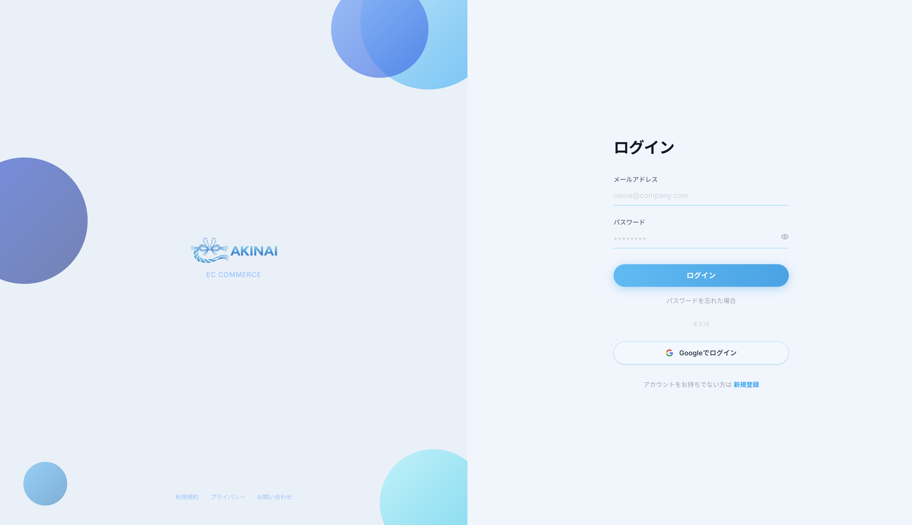
02 — 初期設定
初回ログイン時に表示されるウィザードで、組織の基本情報を設定します。
03 — ダッシュボード
ログイン後に最初に表示される画面。売上・注文・在庫をリアルタイムで把握できます。
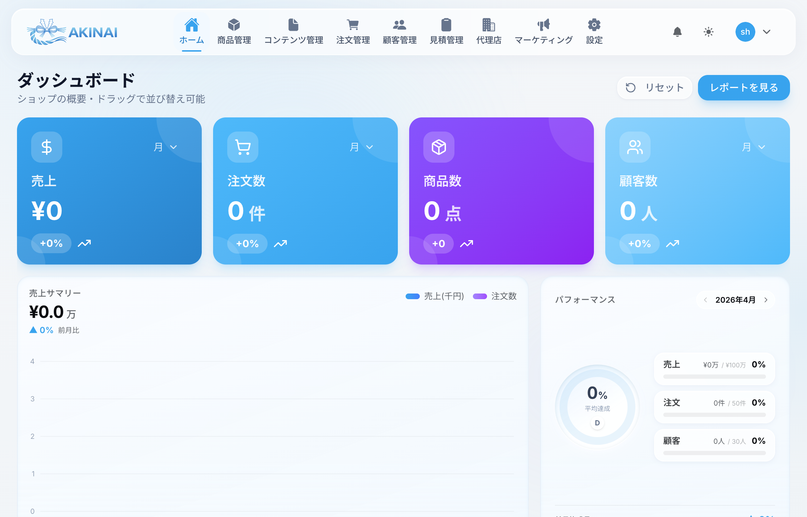
期間内の合計売上額。前期比トレンドも表示。
受注件数とステータス別内訳。未対応の注文がひと目でわかります。
登録商品の総数と在庫状況（正常 / 残りわずか / 在庫切れ）。
総顧客数と新規顧客の推移。リピート率も確認できます。
月別売上推移グラフは「月次」「年次」「全期間」から切り替え可能。最近の注文・在庫アラート・人気商品もウィジェット形式で表示されます。 各ウィジェットはドラッグ＆ドロップで並び替えられます。
04 — 商品管理
商品の登録・編集・在庫管理・カテゴリー管理をひとつの画面で行います。
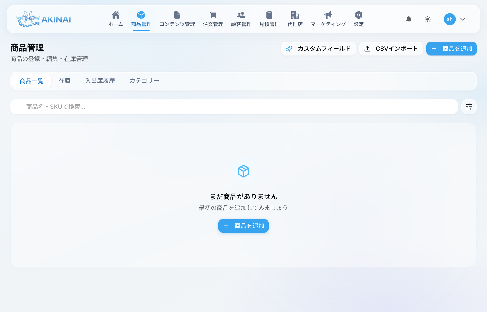
商品カード：緑 = 公開中、グレー = 下書き。在庫切れは赤、残りわずかはスカイブルーで表示。
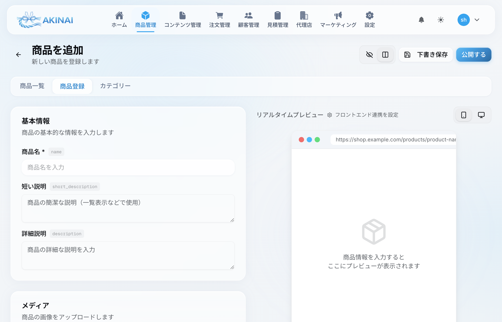
左側のフォームと右側のリアルタイムプレビューで分割表示されます。
上部タブ「在庫」に切り替えると全商品の在庫状況を一覧で確認できます。「入出庫」タブでは在庫の増減履歴を時系列で確認。複数商品の在庫一括更新にも対応しています。
「カテゴリー」タブからカテゴリーの作成・編集・削除が行えます。ショップのナビゲーションと商品フィルタリングに使用されます。
05 — 注文管理
受注の確認・ステータス更新・発送管理を一元化します。
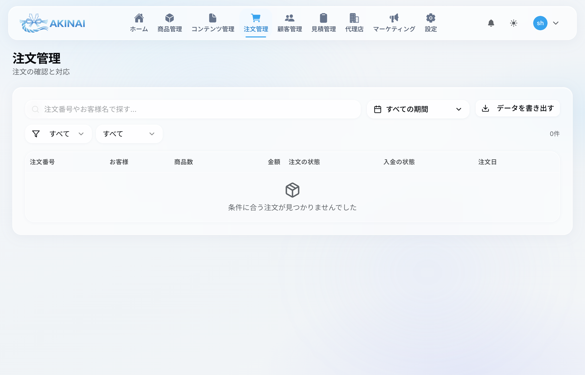
06 — 見積管理
法人向け見積の作成・送付・交渉から受注変換まで一気通貫で管理します。
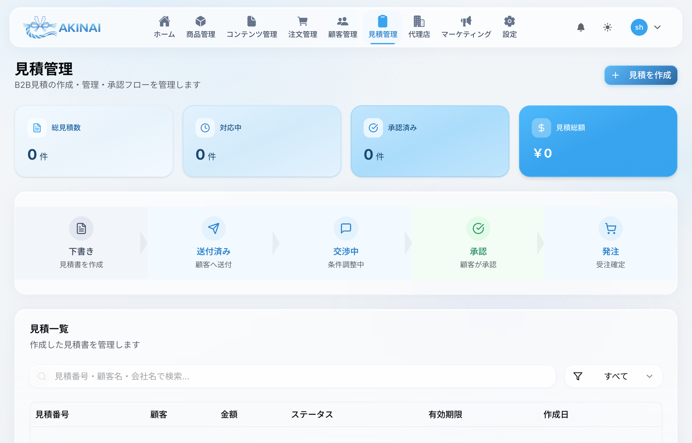
作成した見積の合計件数。
現在進行中の見積件数。
顧客に承認された見積件数。
全見積の合計金額。
07 — コンテンツ管理
ニュース・ブログ・特集・FAQなどの記事をリッチエディタで作成・公開します。
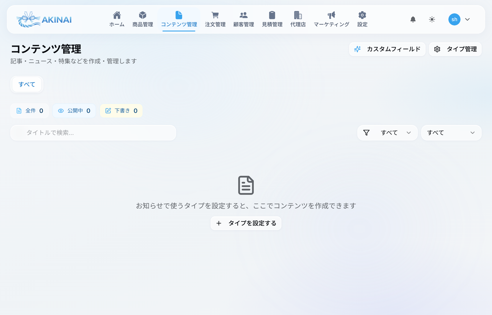
お知らせ、プレスリリース、更新情報など。
商品の特集記事、ピックアップ情報。
ブログ記事、コラム、読み物。
よくある質問とその回答。
08 — 顧客管理
顧客情報の管理・分析・コミュニケーションを一元化します。
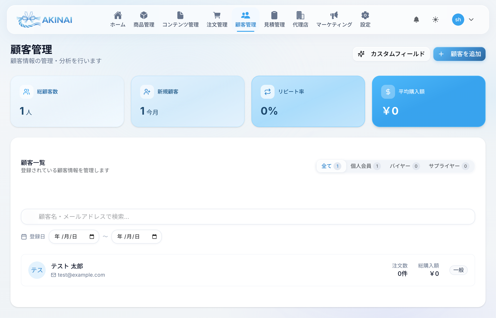
登録されている全顧客の数。
今月に新規登録された顧客数。
リピート購入している顧客の割合。
顧客1人あたりの平均購入金額。
09 — マーケティング
アナリティクス・メルマガ・メッセージ・イベント・問い合わせ管理の5機能を搭載。
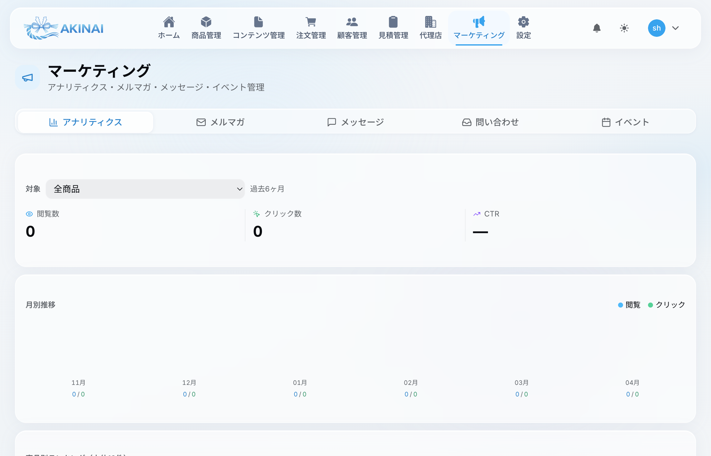
商品ごとの閲覧数・クリック数・CTRを分析。月別グラフで推移を確認し、人気商品ランキングも表示。商品フィルターで特定商品に絞った分析が可能です。
件名と本文を入力し、送信先（全員 / 特定サプライヤーの顧客）を選択して一括送信。送信履歴も確認できます。
サプライヤーを選択してバイヤーに直接メッセージを送信できます。
展示会・セミナーなどのイベント情報を管理。タイトル・日時・場所・説明・ジャンル・地域タグを設定して公開します。
顧客からの問い合わせをスレッド形式で管理。ステータス（オープン / クローズ）でフィルタリングし、チャット形式でやり取りを続けられます。
10 — 代理店管理
代理店パートナーの登録・コード発行・売上管理を一元化します。
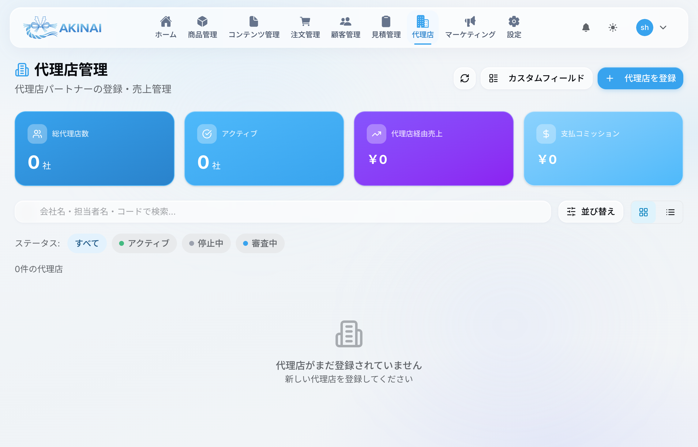
11 — 設定
カテゴリー別のカードグリッドで構成。各カードをクリックすると詳細設定ページに遷移します。
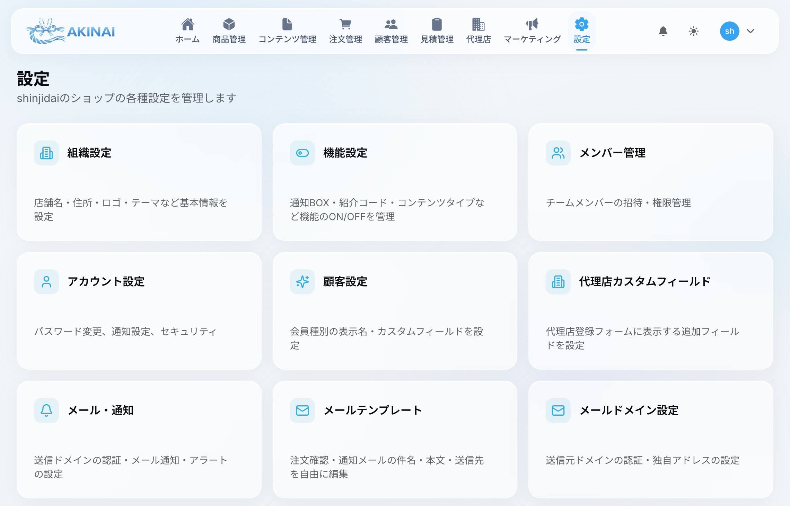
12 — ショップ
顧客が商品を閲覧・購入するための公開ページ。管理画面の設定と連動します。
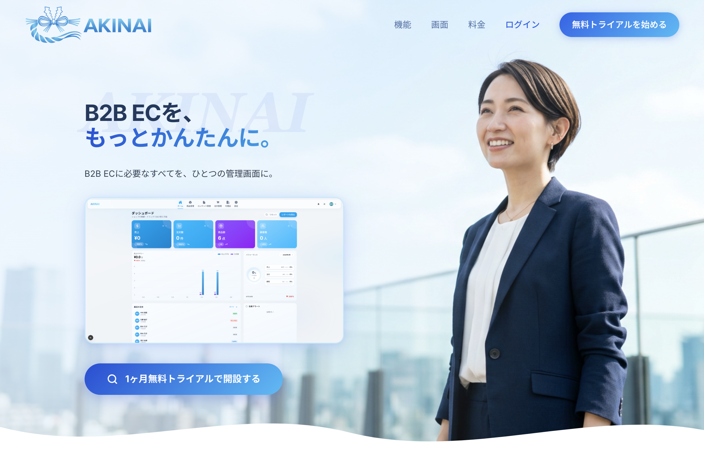
「設定 → ショップテーマ」でセクションの表示/非表示や順序を変更できます。
全商品をグリッド表示（モバイル2列 / タブレット3列 / デスクトップ4列）。カテゴリータブで絞り込み、並び替え（人気順 / 新着順 / 価格順）が可能。 「FEATURED」「SALE」「SOLD OUT」バッジで商品状態がひと目でわかります。
Visa / Mastercard / JCB / AMEX 対応。Stripeセキュア決済。
振込先情報を案内。入金確認後に発送。
手数料 ¥330。商品受取時にお支払い。